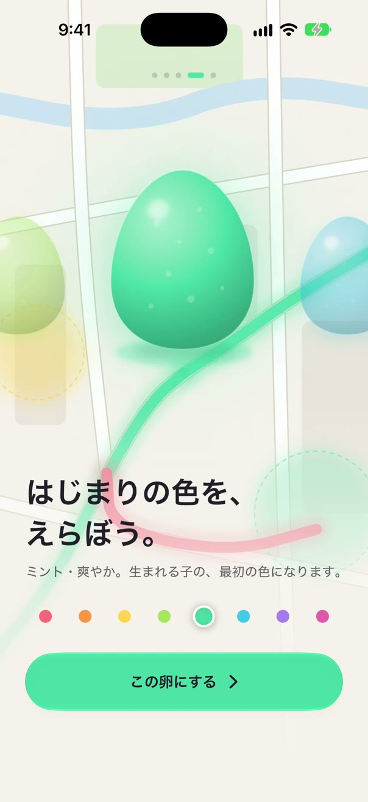
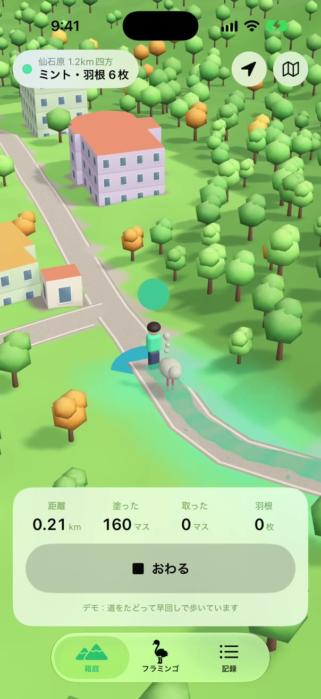
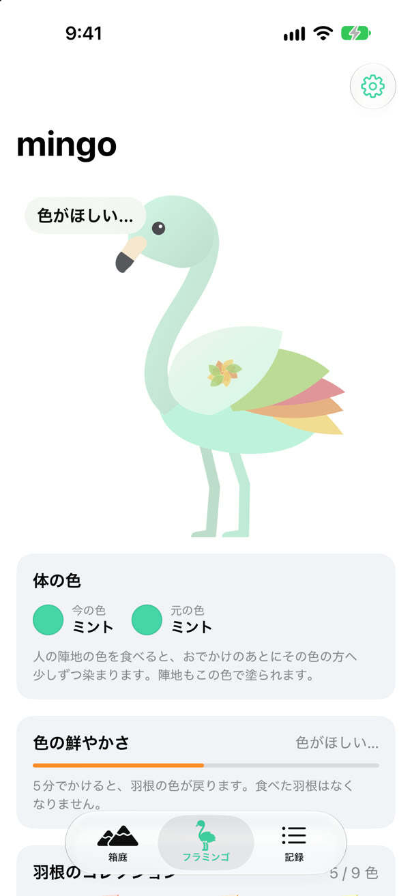
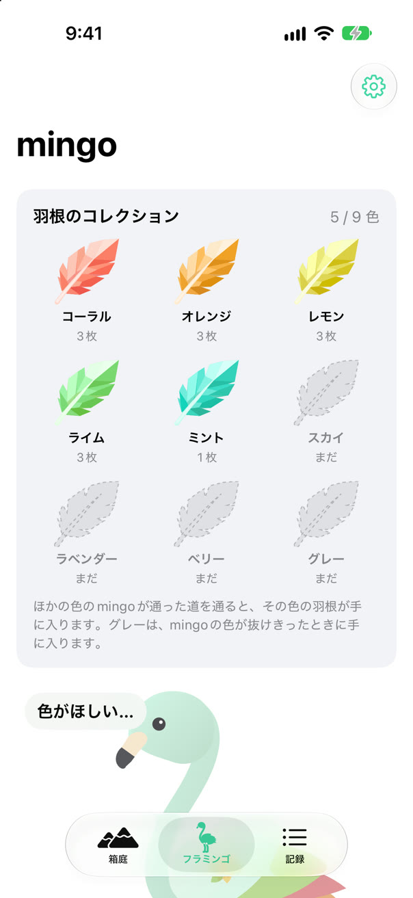

運動の成果は、
健康や体力は、続けた先でやっと実感できるごほうびです。その日の一歩には、その日のうちに返ってくるものがありません。
mingo は、そこに色を置きました。歩いたそばから道が染まり、フラミンゴが色づく。色を、走るごほうびにしています。
- 男性
- 6,628歩
- 女性
- 5,659歩
直近10年間で、男女ともに減っています。
出典：厚生労働省「令和5年 国民健康・栄養調査」
はじまりの色を、
フラミンゴは、食べたものが自分の色になる鳥です。mingo のフラミンゴは、きみがえらんだ色の卵から生まれます。
コーラルフラミンゴらしいピンク
えらんだ色で、このページの道も染まります。
スクロールして、
-
歩いた道が、
きみの色に染まる。 「でかける」を押して、街へ。位置情報と連動して、通った道がフラミンゴの色で塗られていきます。歩いても、走っても。
-
よその色を、
ついばむ。 ほかの色の道を通ると、フラミンゴがその色を食べます。食べた色は尾の羽に表れ、体の色も少しずつそちらへ染まっていきます。
-
出会った色は、
羽根になって残る。 はじめて食べた色は、新しい羽根としてコレクションに加わります。まだ知らない色が、次に出かける理由になります。
羽根のコレクション
1 / 9 色
影の羽根にふれると、ひらきます。アプリでは、その色の道を通ったときに手に入ります。
アプリの画面

卵の色をえらぶ 
歩いた道が染まる 
フラミンゴの様子を見る 
羽根を集める
40秒でわかる mingo
音声が流れます。画面の中の映像は、アプリの実際の画面です。
きみの mingo と、
iPhone 向けのベータ版を、TestFlight で配っています。はじめに Apple の「TestFlight」アプリを入れてから、参加してください。
色を、走る理由に。
運動を義務としてとらえるのではなく、まだ知らない色と出会う冒険として楽しむ。mingo が届けたいのは、その体験です。
- 発見
- 愛着
- 達成感
- 彩り